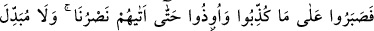
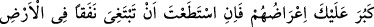
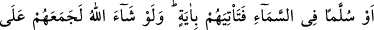
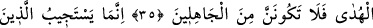
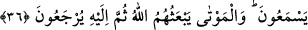

HZ. PEYGAMBER’İN
TESELLİ VE İKAZ EDİLMESİ
33. Onların söylediklerinin hakikaten seni üzmekte olduğunu biliyoruz. Aslında
onlar seni yalanlamıyor, fakat o zalimler açıkça Allah’ın âyetlerini inkâr ediyorlar.
34. Andolsun ki senden önceki peygamberler de yalanlanmıştı. Onlar,
yalanlanmalarına ve eziyet edilmelerine rağmen sabrettiler, sonunda yardımımız
onlara yetişti. Allah’ın kelimelerini (kanunlarını) değiştirebilecek hiçbir kimse
yoktur. Muhakkak ki peygamberlerin haberlerinden bazısı sana da geldi.
35. Eğer onların yüz çevirmesi sana ağır geldi ise, yapabilirsen yerin içine
inebileceğin bir tünel ya da göğe çıkabileceğin bir merdiven ara ki onlara bir
mûcize getiresin! Allah dileseydi, elbette onları hidayet üzerinde toplayıp
birleştirirdi, o halde sakın cahillerden olma!
36. Ancak (samimiyetle) dinleyenler daveti kabul eder. Ölülere gelince, Allah
onları diriltecek, sonra da O’na döndürülecekler.
Ey Muhammed! “Onların” Mekkeli kâfirlerin “söylediklerinin seni üzmekte
olduğunu biliyoruz.” Onların Kur’an âyetleri hakkında “Bu eskilerin masallarından
başka bir şey değildir.” (el-En’âm, 6/25) demelerinin ve buna benzer yakışıksız şeyler
söylemelerinin seni üzdüğünü biliyoruz.
“Aslında onlar seni yalanlamıyorlar.” Onların sözlerine aldırış etme, onların
durumunu Allah’a havale et. Çünkü onlar Allah’ın âyetlerini yalanlamakla gerçekte seni
yalanlamıyorlar.
“Fakat o zâlimler bile bile Allah’ın âyetlerini inkâr ediyorlar.” bilakis onlar
Allah’ın âyetlerini yalanlıyorlar ve inkâr ediyorlar. Senin hakkında yaptıkları da
neticede bana râci olmaktadır. Çünkü sen, Allah’ın dışındakilerden fânî ve Allah’la